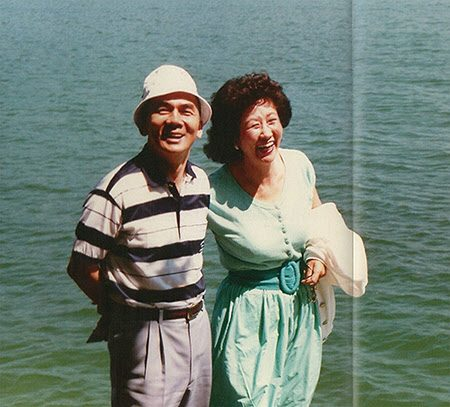

보도일 2015-06-23출처 조선일보 프리미엄조선 연재
청암(靑巖) 박태준은 생애에 여든네 번째로 맞은 여름의 한 자락을 일본 홋카이도 삿포로에서 보내고 있었다. 2011년 8월, 한낮 수은주가 섭씨 25도에 닿을락말락하는 피서 휴양지. 그러나 그는 겨울철 독한 감기에 걸린 것처럼 자꾸만 기침을 하고 있었다. 결코 예사로운 징후가 아니었다. 기침을 시작한 지 어느덧 여섯 달째 접어들었건만 사라질 낌새를 보이지 않는 몹쓸 놈이었다.
홋카이도 전통 식당. 단층 목재건물의 조그만 창 밖에는 저녁 어스름이 내리고 있었다. 따끈한 찻잔을 식탁에 내려놓은 그가 잔기침을 여남은 차례 뱉었다. 그의 평전을 쓴 작가(이대환)는 새삼 가슴이 아려서 차가운 사케 한 잔을 단숨에 삼켰다.
“그까짓 거야 뭐 밤새도록 마시는 거지. 이 집에 좋은 사케는 아주 많소.”
박태준이 웃음을 지었다. ‘너그러운 아이 같은 표정’이라 해야 적절할까. 대한민국 육군에서 손꼽히는 호주(豪酒)였던 자신의 저 젊은 시절 어느 아련한 술자리 장면이 떠오르는 모양이었다. 속절없는 세월의 머나먼 거리. 하염없이 아래로 흐르는 물을 탈 수는 있어도 속절없이 아래로 흐르는 시간을 탈 수야 없는 인간. 그래서 아무도 몸으로는 돌아갈 수 없는 과거로의 길.

“서울에서 뵈었을 때보다는 훨씬 좋아진 것 같은데 아직도 기침이….”
“이 정도만 돼도 뭐든지 할 수 있겠소.”
너무 오래된 끈질긴 기침에 진저리치고 있다는 괴로운 속내를 ‘늙어도 강인한 사나이’의 절제된 언어로 표현한 것이었다. 박태준, 그의 필생의 반려 장옥자, 작가 그리고 지역신문사 대표(김기호). 이들의 저녁식사는 세 시간 가까이 이어졌다. 인생의 황혼을 소일하는 노인의 한국전쟁이나 포스코에 대한 추억담, 남북관계에 대한 고담준론과 인류의 미래에 대한 상상…. 박정희 대통령과의 추억도 빠지지 않았다. 그의 반려자가 한마디를 거들었다.
“당신은 평생을 박정희 대통령과 살아가는 사람 아닙니까? 영혼으로 형제가 되거나 영혼으로 결혼한 부부라도 당신만큼은 못할 겁니다. 우리가 김영삼 씨하고 틀어져서 도쿄 단칸방에 살 때도 그랬어요. 새해 정월 초하룻날 아침에는 박 대통령 사진을 상 위에 모셔놓고 정장 차림으로 세배를 올리는 사람이었어요.”
반려자의 웃음 섞은 말을 박태준은 진지하게 받았다.
“우리가 혁명을 계획할 때 약속한 게 있었고, 나는 또 그 약속을 철저히 지키겠다고 내 인격에 약속을 했으니, 내가 그 양반을 자주 봐야 흔들리다가도 금세 똑바로 서게 될 거 아니오?”
자기 다짐과 같은 반문, 그 끝에 그가 또 잔기침을 했다. 작가는 고개를 끄덕였다. 서울 광화문의 소담한 사무실에도, 시골 고향집 거실에도 박정희 얼굴을 놓아둔 박태준의 깊은 속뜻에 새삼 마음이 아릿해진 것이었다.
2010년 새해에 있었던 하노이 방문(연재 82회)이 화제에 올랐다. 하노이대학 특강을 추억하는 노인이 마치 갈증을 타다가 냉수를 들이켠 것처럼 기운을 냈다.
“그때 그 강연에서는 어디서 그런 힘이 나왔는지 나도 모르겠소. 지금 생각해봐도 알 수가 없어.”
모두 즐겁게 웃었다. 그 여행을 함께 했던 것이다.
삿포로의 여름밤이 자정에 다가섰다. 작가는 호텔 방에 앉아 자정이 지나서도 혼자서 폭탄주를 마시고 있었다. 내년 여름에는 당신을 만나 뵈러 삿포로를 찾아오는 일이 없어질지 모른다. 이 불길한 예감을 쫓아내려 했다. 귓전에 켜켜이 쌓인 노인의 기침소리도 씻어내려 했다. 그것은 문학적인 감상(感傷)의 발로가 아니었다. 아무래도 그 기침은 꼬박 십 년 전의 그 대수술이 새로 말썽을 일으키는 게 아닌가. 이 짐작을 떨쳐내지 못하는 쓸쓸함이었다. 이대환의 평전 ‘박태준’은 기나긴 이야기의 첫머리를 이렇게 시작한다.
<2001년 7월 하순, 뉴욕의 한낮은 찜통이었다. 어둠이 두텁게 깔린 뒤에도 더위는 좀체 식지 않았다. 열대야 현상은 우주로부터 의연히 내려온 정규군처럼 지구에서 가장 막강하다는 국가의 거대한 도시를 점령해 버렸다. 그러나 평화로웠다. 뒷골목의 소란마저 더위에 지쳐 얌전해진 듯했다. 강력한 정규군의 전과(戰果)는 기껏해야 도시 기상대에 달린 화씨 온도계의 최고 신기록 갱신으로나 남을지.
그 무렵, 한국의 어느 노인이 뉴욕 코넬대학 병원에 누워 있었다. 7월 25일 오후 1시 30분, 수술실에서 중환자실로 옮겨져 빈사지경을 막 벗어난 몸이다. 왼쪽 옆구리 33센티미터를 갈라 갈비뼈 하나를 톱으로 잘라 통째로 빼낸 다음, 그 구멍으로 폐 밑에서 폐를 압박해온 풍선만 한 물혹을 끄집어내는 대수술. 소요시간 6시간 30분, 물혹 무게 3.2킬로그램.
이는 일찍이 어머니가 그를 출산하면서 겪은 격렬한 진통 시간에 견줄 만하고, 갓 태어났을 때 그의 몸무게보다도 무거울 만한 기록이었다. 이집트 출신의, 손이 자그마한 집도의(執刀醫)는 신생아 무게의 물혹을 세계 신기록이라 했다.
<②편에 계속>